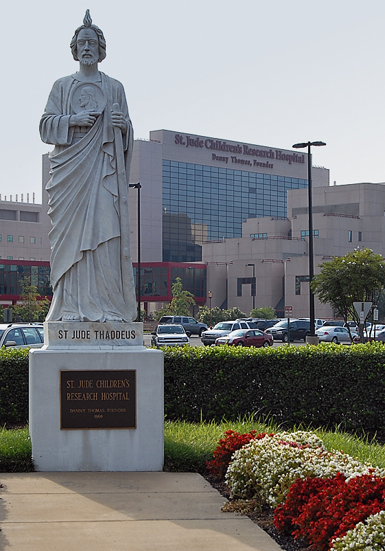

Their Story
St. Jude Children's Research Hospital does treatments on children to try to cure their cancer. St. Jude opened in February 4, 1962. The founder, Danny Thomas, stated that "no child is denied treatment based on race, religion or a family's ability to pay." St. Jude doesn't want families of the children to pay a single bill. They believe that the families should make sure that their child stays alive. The survival rate of the children increased from 20% to 80%. St. Jude Hospital is located in Memphis, Tennessee.
Children's Stories and Daily Lives
Children are diagnosed with cancer in the most unexpected times. But once they are diagnosed, their lives change and they have to be restricted and responsible to many things like taking their medicine. Here are some examples of strong children who fight for their lives everyday.
June
June is a little girl who is 4 years old. In early 2018, she started to have viruses and pains. Her family went to the doctor's office three times a week and the doctor finally diagnosed June with acute lymphoblastic leukemia. St. Jude Children's Research Hospital was a brust of sunshine for June. She takes medicine everyday. June wants to be a doctor when she grow up.
If you want to learn more about June, click this link to read more:
June
Tony
Tony is a baby boy who is 1 year old. Tony was 9 months old when he was diagnosed with acute lymphoblastic leukemia. They went to St. Jude Children's Research Hospital and they were cared for and never pay a bill.
If you wnat to learn more about Tony, click on this link to read more:
Tony
Ways to Donate or Volunteer
St. Jude Children's Research Hospital is always looking for people to volunteer or donate to the children or their research. The volunteering varies from a marathon, giving at work, or volunteering at the hospital. If you want to give, you can donate by:
- Making Christmas/Get Well Cards
- Memorials and Dedications
- School Fundraisers
- Workplace Giving